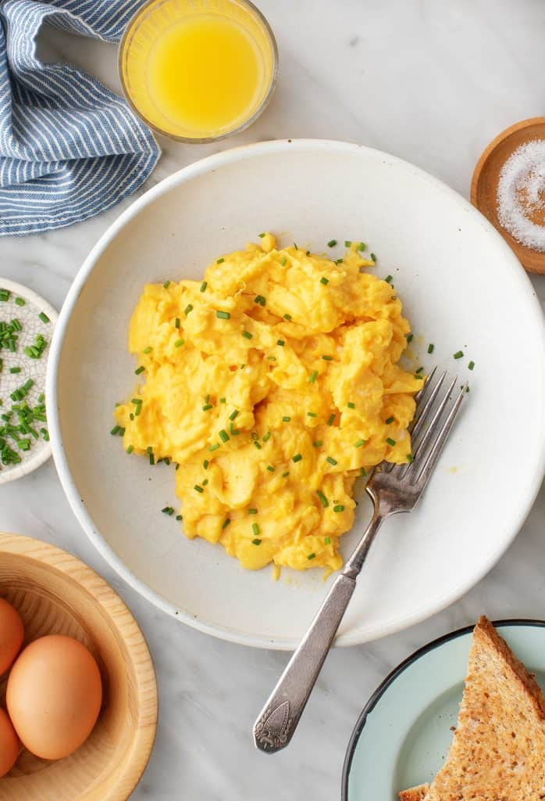

Scrambled Eggs

Description
Scrambled eggs are a simple, quick, and nutritious dish. They are made by whisking eggs and cooking them gently in butter or oil until they form soft curds.
Ingredients
- 4 eggs
- 2 tbsp milk or cream
- Salt and pepper to taste
- 1 tbsp butter or oil
- Fresh herbs or cheese
Steps
- Whisk: Crack eggs into a bowl, add milk, and whisk until combined.
- Heat pan: Melt butter in a non-stick skillet over medium heat.
- Cook eggs: Pour eggs into the pan and cook gently, stirring continuously, until soft curds form. Season with salt and pepper.
- Serve: Remove from heat while slightly underdone (they will finish cooking off the heat). Add herbs or cheese if desired.